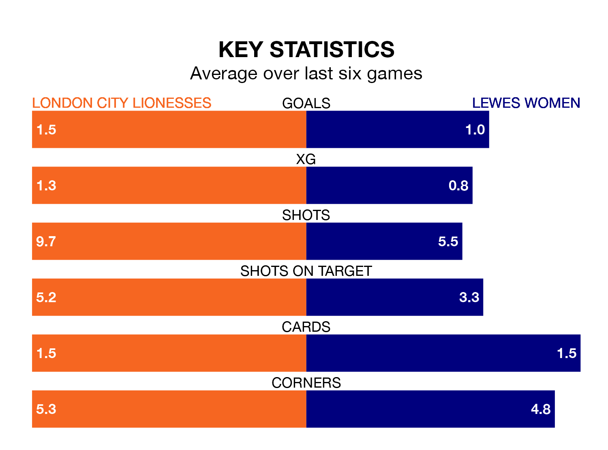

Lewes Women make the journey to Princes Park to play London City Lionesses on early Sunday looking to pick up points to end their three-game losing streak.
Lewes's struggles have left them with six points from their last six FA Women's Championship matches, while their opponents have earned 10 from a possible 18.
Lewes are 11th in the table after 21 games, of which they have won four and drawn four, earning 16 points.
London City are three places ahead of the away side in eighth, with six wins and four draws putting them on 22 points.
In the last 10 years, London City and Lewes have played each other on 13 occasions. They won six each, and they drew once.
On average, the Lionesses scored 1.0 goal and Lewes 1.1 in those matches.
Their last meeting was on November 22, when London City won 1-0 away.
With 20 goals in 21 games so far this season, Lewes are the league's third-lowest scorers with 1.0 goals per game. And they are conceding more than average, letting in 36 goals at a rate of 1.7 per game.
The Lionesses are also below average scorers, with 1.1 goals per game, compared to a league average of 1.4. They have conceded 1.6 goals per game.
London City's last match was on April 21, a 3-1 loss against Southampton Women, with Leanne Cowan getting the goal for the Lionesses.
Lewes lost 2-0 against Crystal Palace Women last time out, also on April 21.
Updated: 07:59 (UTC), 26/04/24